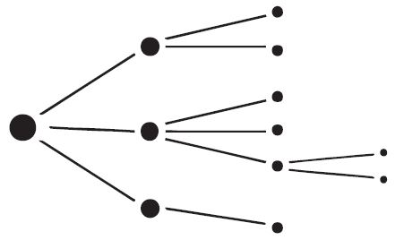
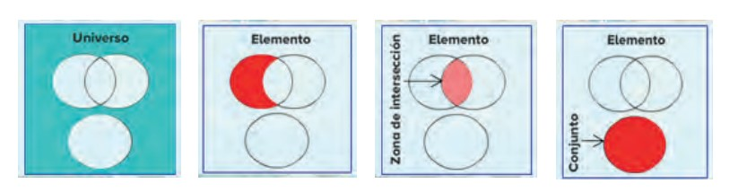
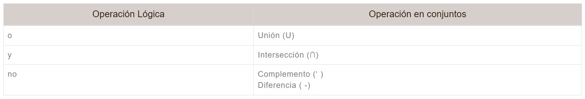
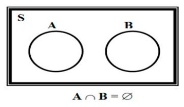
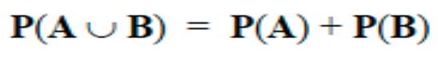
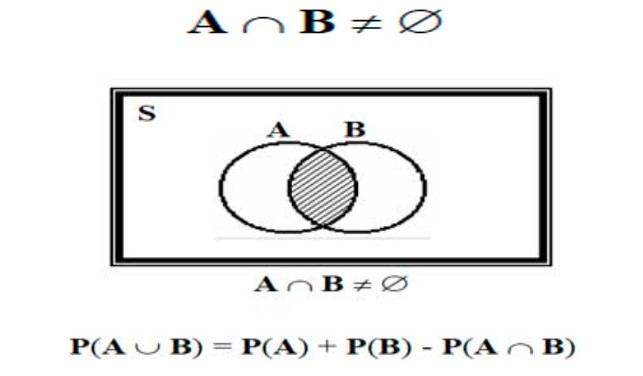
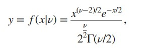
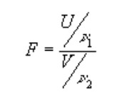
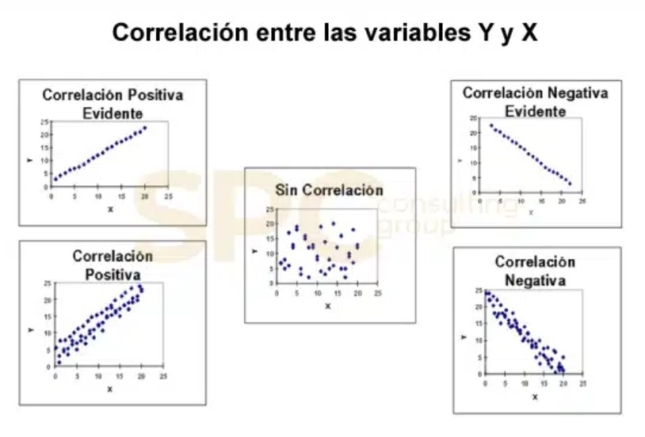

Tema 1
Usuario de Dataquest. Acceder
Tema 1
Estadística descriptiva
La Estadística Descriptiva es la rama de la Estadística que provee los métodos
para organizar, representar, resumir y analizar la información contenida en un
conjunto de datos, ya sean estos datos de muestras o de poblaciones completas.
1.1 Conceptos básicos de estadística:
- Definición:
La Estadística es una disciplina de las Matemáticas que recopila y
organiza la información sobre personas, eventos o entidades. Utiliza diversos métodos y
técnicas para llevarla a cabo. Además, facilita el análisis e
interpretación de estos datos con el objetivo de extraer conclusiones a partir de ellos.
- Teoría de decisión:
Tiene como objetivo saber como utilizar muestras para determinar
si una o varias poblaciones poseen características específicas. Asimismo, permite
establecer qué tan improbable es que las muestras observadas provengan de una población
hipotética determinada, además de contemplar los diferentes tipos de errores que pueden
surgir al probar una hipótesis, con el fin de comprender cómo emplear adecuadamente
herramientas como las distribuciones de probabilidad durante el proceso.
- Población:
La población se refiere al conjunto completo de elementos sobre los cuales se observan o
se estudian una o más características de interés.
- Muestra aleatoria:
Dado que una muestra se trata de un subconjunto de todos los elementos, una muestra
aleatoria se trata de una selección de esta muestra donde existe la probabillidad
de que alguno de estos elementos sea elegido.
- Parámetros aleatorios:
Se refiere a las características que se pueden medir en la muestra.
1.2 Descripción de datos
- Datos agrupados:
Para utiizar los datos de una manera más precisa, estos se deben agrupar en Una
distribución de frecuencias, mediante categorías.
- Datos no agrupados:
Se trata de aquellos datos que no han sido clasificados después de haber sido recolectados.
No se encuentran ordenados bajo ningún criterrio.
- Frecuencia de clase:
Indica cuántos o qué porcentaje de los datos se encuentran
dentro de un rango o intervalo de clase determinado en una representación estadística
de datos agrupados.
- Frecuencia relativa:
Se refiere al porcentaje que corresponde a cada valor adentro de un conjunto de datos.
- Punto medio:
También conocido como marca de clase, se trata de la cantidad intermedia que existe entre los
valores de cada límite de cada clase.
- Limites:
Retomando el concepto anterior, los límites se tratan de el valor inferior y superior
que existen entre cada clase, donde empieza y termina cada una de ellas.
1.3 Medidas de tendencia central
Se trata de medidas de la estadística que se encargan de simplificar un conjunto de valores
en un solo valor.
- Media aritmética, geométrica y ponderada:
La media aritmética es el promedio de la muestra.
La media geométrica
- Mediana:
Funciona para representa el valor de la variable que ocupa la posición intermedia cuando
los datos se ordenan de menor a mayor.
Cuando el número de elementos a observar se trata de un número par, entonces debemos
realizar el promedio de dos de los valores centrales.
- Moda:
Se trata del valor que más se repite en la muestra.
- Medidas de dispersión:
Se trata del rango de valores que una medida estadística puede tomar al ser
calculada para distintas muestras o subgrupos de datos.
Por ejemplo, una medida de dispersión muy utilizada es la varianza o desviación
estándar.
- Varianza:
Se trata de la variación que pueda tener de los datos del valor de la media.
Indica qué tan alejados se encuentran dichos valores a la media.
Esta es la fórmula para obtenerla:
$$
\sigma^2 = \sum_{i=1}^{N} (x_i - \mu)^2 P(x_i)
$$
Para utilizar esta fórmula se tuvo que haber realizado el cálculo de la fórmula del
valor esperado previamente, que corresponde al valor de $$ \mu$$
- Desviación estándar:
Nos indica qué tan dispersos están, en promedio, los valores de datos
respecto a la media o valor central de la distribución. A mayor dispersión de los datos,
mayor será el valor de la desviación estándar.
Esta es su fórmula:
$$
DE = \sqrt{\frac{\sum |x - \mu|^2}{N}}
$$
- Desviación media:
Se trata de una medida que resume el grado de dispersión o variabilidad presente en un
conjunto de datos.
Esta medida representa el promedio de las diferencias absolutas entre cada valor
individual y la media del conjunto. Así, cuanto menor sea la desviación media de un
grupo de datos, estarán más cercanos entre sí.
Por el contrario, si la desviación media de un conjunto de datos es mayor que la de otro
conjunto, indica que los valores del primer conjunto presentan una dispersión o mayor,
es decir, se encuentran más distantes unos de otros en comparación con el segundo conjunto.
Esta es su fórmula:
$$
DM = \frac{|n_1 - \bar{x}| + |n_2 - \bar{x}| + \cdots + |n_n - \bar{x}|}{N}
$$
- Desviación mediana:
Es una medida de dispersión estadística que se comporta de manera más robusta que
la desviación estándar, especialmente cuando se trabaja con distribuciones de datos
que carecen de media o varianza definidas. Esta es su fórmula:
$$
DM = \frac{\sum |x_i - Me| \cdot n_i}{n}
$$
- Rango:
el rango proporciona información sobre la extensión o longitud del intervalo que
abarca todos los elementos del conjunto de datos. Se calcula restando el valor mínimo
del valor máximo.
1.4 Parámetros para datos agrupados
Se trata de los siguientes parámetros:
Rango.
Desviación estándar.
Varianza.
Desviación media.
Coeficiente de variación.
1.5 Distribución de frecuencias
Se realiza una tabla con los siguientes datos:
Clases.
Límites inferiores.
Límites superiores.
Marca de clase.
Frecuencia absoluta.
Frecuencia relativa.
Frecuencia acumulada.
1.6 Técnicas de agrupación de datos
corresponde a la organización de datos estadísticos de acuerdo a la clase y su respectiva
frecuencia, entre estos datos se forma un solo intervalo de clase. No hay una manera
establecida para utilizar datos agrupados o no agrupados, pero existe la sugerencia de
que cuando la cantidad de datos supere los 50 y el valor del rango sea mayor a 20, entonces
se utiliza una distrib de frecuencias con datos agrupados. También se recomienda usar esta
misma distribución cuando sea necesario elaborar gráficos como histogramas, polígonos
de frecuancias y ojivas.
1.7 Técnicas de muestreo
Los dos principales métodos son:
Muestreo no aleatorio o de juicio
- Está basado en el criterio de alguien familiarizado con la población.
- La muestra no se realiza mediante el azar.
Muestreo aleatorio
- Para seleccionar la muestra se realiza mediante el azar.
- Tiene la posibilidad de ser seleccionado cada elemeto de la población
Actividad en equipo:
Trabajo en equipo.
Acceder
Tema 2
Fundamentos de la Teoría de Probabilidad.
Regresar al índice
2.1 Técnicas de Conteo.
Se trata de procesos y fórmulas que nos da la posibilidad de obtener el total de resultados posibles
en un experimento.
- 2.1.1 Principio aditivo:
Si tenemos dos eventos independientes y alternativos, donde el primero puede suceder de
"m" maneras distintas y el segundo puede ocurrir de "n" formas diferentes, y ambos
eventos son mutuamente excluyentes, entonces el número total de combinaciones posibles
para que ocurra el evento "A" o el evento "B" es el resultado de sumar "m" y "n".
- 2.1.2 Principio multiplicativo:
Si dos eventos independientes donde el primero puede suceder de "m" maneras
distintas y el segundo puede ocurrir de "n" formas diferentes, entonces el número total
de combinaciones posibles para que ambos eventos ocurran es el resultado de multiplicar
"m" por "n".
- 2.1.3 Notación Factorial:
Se trata de una función matemática que se representan con el símbolo !
Es el resultado de multiplicar todos los números positivos y enteros que van desde
1 hasta n cantidad.
- 2.1.4 Permutaciones:
En otras palabras, el número de permutaciones representa la cantidad de maneras únicas en que
se pueden colocar o disponer r elementos seleccionados de un conjunto original de n elementos,
donde el orden de selección es relevante.
$$
\text{nPr} = \frac{n!}{(n-r)!}
$$
- 2.1.5 Combinaciones:
Se trata de la cantidad de formas en las que se pueden elegir r objetos de un conjunto que
contiene n elementos, sin considerar el orden de selección, se denomina número de combinaciones
de n objetos tomados de r en r.
$$
\text{nCr} = \frac{n!}{r!(n-r)!}
$$
- 2.1.6 Diagrama de Árbol:
Se trata de un método gráfico con el que podemos ver los resultados posibles de un
experimento.

- 2.1.7 Teorema del Binomio:
Describe la forma de expandir una expresión binomial, es decir, una expresión que consta
de la suma de dos términos elevada a una potencia entera positiva.
Su fórmula es:
$$
a + b)^n = \sum_{k=0}^n \frac{n!}{k!(n-k)!} a^{n-k} b^k
$$
2.2 Teoría elemental de probabilidad.
Busca atribuir un número a cada posible resultado de un
experimento aleatorio, de manera que se pueda medir y comparar la probabilidad de que
ocurra cada uno de esos resultados. Esto permite entender qué eventos son más o menos
probables de ocurrir.
2.3 Probabilidad de Eventos:
- Definición de espacio muestral:
el espacio muestral representa el conjunto completo de todas las posibles opciones o
alternativas que pueden generarse como consecuencia de la realización de un experimento
aleatorio. Incluye cada uno de los resultados individuales y mutuamente excluyentes que
pueden obtenerse.
- Definición de evento:
Un evento corresponde a cualquier resultado factible que puede obtenerse de un experimento,
y es la unidad mínima de análisis utilizada para efectuar los cálculos de probabilidades.
- Simbología:
- Espacio muestral: omega (Ω) o "S".
- Evento: Se representa con letras como A, B, C, etc.
- Probabilidad: De un evento P(A)
- Unión:
Unión de sucesos: La unión de dos eventos A y B se refiere al evento compuesto por
todos los resultados o sucesos elementales que forman parte de A, de B, o de ambos
A y B a la vez. Este evento unión se representa simbólicamente como A ∪ B.
- Intersección:
Intersección de sucesos: la intersección de dos eventos A y B se refiere al evento
compuesto por todos los resultados o sucesos elementales que son comunes a ambos
eventos A y B. Este evento de intersección se representa simbólicamente como A ∩ B.
- Diagramas de Venn:
los diagramas de Venn son útiles para mostrar cómo los elementos pueden pertenecer a
múltiples categorías simultáneamente, y permiten representar gráficamente las
interrelaciones entre los diferentes conjuntos o categorías que componen un determinado
universo de análisis.

Operaciones utilizadas para emplear eventos aleatorios.

2.4 Probabilidad con Técnicas de Conteo:
- Axiomas:
los axiomas de probabilidad son las condiciones básicas que debe cumplir una función de
probabilidad definida sobre un conjunto de eventos, de modo que las probabilidades que
ésta asigna a dichos eventos sean consistentes y tengan sentido.
La probabilidad de un suceso:
- Axioma 1: No puede ser negativa.
- Axioma 2: Es de 1.
- Axioma 3: si tenemos un grupo de eventos que no pueden ocurrir simultáneamente,
es decir, son eventos excluyentes entre sí, entonces la probabilidad del conjunto
completo de esos eventos es simplemente la adición de las probabilidades de cada
evento individual.
- Teoremas:
Supongamos que P(A) y P(B) representan las probabilidades de los eventos A y B,
respectivamente. Entonces, P(A ∪ B) significa la probabilidad de que ocurra el evento
A o el evento B, o ambos.
Si representamos los eventos A y B en un diagrama de Venn:

Cuando los eventos A y B se representan como conjuntos separados que no se superponen
en un diagrama de Venn, esto indica que son eventos mutuamente excluyentes, que no pueden
suceder al mismo tiempo.

Si los dos eventos tienen puntos muestrales en los que ambos coinciden

2.5 Probabilidad condicional:
Nos permite calcular la probabilidad de que un evento suceda, cuando otro evento
ha ocurrido antes.
Para algunos casos, se necesita calcular la probabilidad condicional condicionada, es decir,
la probabilidad de un evento dado que otro evento ha ocurrido y se sabe que está relacionado
con un tercer evento.
- Dependiente:
Implica que la probabilidad de un evento B no es independiente, sino que está ligado
a la previa ocurrencia del evento A. Existe una relación de dependencia entre las
probabilidades de ambos eventos.
- Independiente:
Cuando la probabilidad de un evento B es independiente de si el evento A ha ocurrido
o no, se dice que la probabilidad de B es condicionalmente independiente de A.
2.6 Ley multiplicativa.
Si los eventos A y B son independientes entre sí, la probabilidad de que ocurran los dos
eventos de forma conjunta se calcula multiplicando la probabilidad del evento A por la
probabilidad del evento B.
$$
P(A \cap B) = p(A) \cdot p(B)
$$
No puede ser válida para eventos que dependen entre sí.
2.7 Eventos independientes: Regla de Bayes.
De esta manera, el Teorema de Bayes nos permite realizar inferencias y actualizaciones en
nuestras estimaciones de probabilidad a medida que tenemos acceso a nueva información
pertinente. Esto hace que sea una herramienta estadística muy útil para la toma de decisiones.
Se debe tener en cuenta conceptos básicos como: La probabilidad condicional, la regla
de multiplicación de la probabilidad. Se basa principalmente en ellos.
El Teorema de Bayes establece la forma de calcular la probabilidad condicional de un evento
A, dado que ha ocurrido otro evento B, utilizando las probabilidades individuales de A y B,
y la probabilidad condicional de B dado A.
$$
P(A|B) = \frac{P(B|A) \cdot P(A)}{P(B)}
$$
Trabajo en equipo.
Acceder.
Tema 3
Variables aleatorias.
Una variable aleatoria es una función que se determina mediante el resultado de un
experimento donde se obtienen resultados aleatorios.
Regresar al índice
3.1 Variables aleatorias discretas:
Representa a un número de valores que se puedan numerar en un rango específico
ya que se trata de una cantidad finita de estos valores.
Hay que considerar que estos números son enteros.
- 3.1.1 Distribución de probabilidad en forma general:
Se va a representar mediante la función de masa de probabilidad (PMF).
Se denotada como p(x), de una variable aleatoria discreta X es la siguiente:
$$
p(x) = P(X = x)
$$
Cuenta con las siguientes propiedades:
- La probabilidad de que una variable aleatoria discreta tome un cierto valor nunca
puede ser un número negativo. La probabilidad siempre toma valores entre 0 y 1.
-
Si se suman todas las probabilidades de los diferentes valores que puede asumir la
variable aleatoria, el resultado será 1. Esto se expresa matemáticamente como:
Σ p(x) = 1
- 3.1.2 Valor esperado:
El valor esperado o media para este caso, se representa como E(X). Se trata del
promedio de la variable aleatoria, ponderando cada posible valor por su probabilidad
de ocurrencia.
Esta es la fórmula:
$$
\mu = E(X) = x_1 \cdot f(x_1) + x_2 \cdot f(x_2) + \dots + x_n \cdot f(x_n) = \sum x \cdot f(x)
$$
- 3.1.3 Varianza, desviación estándar:
-
La varianza, denotada por el símbolo "σ²" o "V(X)", es una medida de dispersión que
representa un promedio ponderado de los cuadrados de las desviaciones de una variable
aleatoria con respecto a su media.
Esta es su fórmula:
$$
\sigma^2 = V(X) = \left[\sum x^2 \cdot f(x)\right] - \mu^2
$$
-
Desviación estándar: Se denota por el símbolo "σ" y se trata de la raíz cuadrada
positiva de la varianza.
Esta es la fórmula:
$$
\sigma = \sqrt{\sigma^2}
$$
- 3.1.4 Función acumulada:
La función de distribución acumulativa permite calcular la probabilidad de que una
variable aleatoria X tome un valor menor o igual a un valor específico x. Esta función
proporciona información sobre la probabilidad acumulada de los posibles valores que puede
tomar la variable aleatoria.
Su fórmula es:
$$
F(x) = P(X \leq x)
$$
propiedades:
- Valores del intervalo F(x): 0 ≤ F(x) ≤ 1
- F(x) no se trata de una función que decrece.
Para la variable aleatoria discreta se cumple:
$$
P(a < X \leq b) = F(b) - F(a)
$$
3.2 Variables aleatorias Continuas:
Representa a un número de valores que no se pueden numerar con precisión dentro de un rango
específico. Estos valores están formados por números decimales.
- 3.2.1Distribución de probabilidad en forma general:
Se va a representar mediante la función de densidad de probabilidad (PDF).
La función de densidad de probabilidad f(x) representa la razón de cambio instantánea
(la derivada) de la función de distribución acumulativa F(x) con respecto al valor x de
la variable aleatoria continua.
Esta es su fórmula:
$$
f(x) = \frac{dF(x)}{dx}
$$
Cumple con estas propiedades:
-
El valor de la función f(x) es siempre mayor o igual a cero para cualquier valor
de x. Es decir, f(x) ≥ 0 para todo x.
-
La integral de la función de densidad de probabilidad f(x) evaluada en todo el
rango de valores posibles de x, desde menos infinito (-∞) hasta más infinito (+∞),
es igual a 1.
- 3.2.2 Valor esperado:
Al igual que en la variable aleatoria discreta, se utiliza la media, es decir,
μ o E(X).
Su fórmula es la siguiente:
$$
\mu = E(X) = \int_{-\infty}^{\infty} x \cdot f(x) dx
$$
- 3.2.3 Varianza, desviación estándar:
- La varianza igual se representa como σ² o V(X) tal como en las variables
aleatorias discretas.
Su fórmula es la siguiente:
$$
\sigma^2 = V(X) = \int_{-\infty}^{\infty} x^2 \cdot f(x) dx - \mu^2
$$
- 3.2.4 Función acumulada:
La función de distribución acumulativa nos proporciona la probabilidad de que la variable
aleatoria tome un valor menor o igual a un valor dado "x".
Su fórmula es la siguiente:
$$
F(x) = P(X \leq x) = \int_{-\infty}^{x} f(t)dt
$$
- 3.2.5 Cálculos de probabilidad:
Es necesario tener en cuenta lo siguiente para realizar los cálculos de probabilidad:
Función de Distribución Acumulativa (CDF):
La función de distribución acumulativa F(x) es una herramienta fundamental para realizar
cálculos de probabilidad con variables aleatorias continuas, ya que permite determinar
las probabilidades de que X tome valores en un intervalo específico.
A partir de la CDF, es posible calcular P(a ≤ X ≤ b) = F(b) - F(a).
Cálculo de probabilidades:
El cálculo de probabilidades con variables aleatorias continuas se basa en la integración
de la función de densidad de probabilidad para determinar probabilidades en intervalos,
así como en el uso de la función de distribución acumulativa para calcular probabilidades
de valores específicos.
Actividades del tema.
Tema 4
Distribuciones de probabilidad.
Las distribuciones de probabalidad son los valores que podrían resultar de
un experimento con resultados aleatorios, más la probabilidad que cada valor
tiene y su respectiva distribución de frecuencias.
Regresar al índice
4.1 Función de probabilidad:
La función de probabilidad es una fórmula matemática que indica la probabilidad
de que una variable aleatoria discreta asuma un valor determinado. Esta función
asigna a cada posible valor de la variable una probabilidad que cumple con las
propiedades fundamentales de las probabilidades.
Antes de continuar es importante mencionar primero:
Proceso de bernouilli.
-
Solo es posible obtener dos resultados: Éxito o fracaso.
-
Cada resultado obtenido de éxito o fracaso es independiente de los demás resultados.
-
Para los resultado tanto de éxito como de fracaso, su probabilidad se mantendrá
constante.
P(E) = p
p = probabilidad
E = éxito
P(F) = p
p = probabilidad
F = fracaso
Tomando en cuenta a la variable aleatoria:
xi = 1 para el resultado con éxito
xi = 0 si el resultado es fracaso
De modo que:
P(E) = P(X=1) = p
P(F) = P(X=0) = q
Entonces:
q = 1-p
4.2 Distribución binomial:
Se trata de una distribución discreta.
Comparte las mismas características del proceso o ensayo de Bernouilli.
Se puede representar con B, teniendo como parámetros n y p.
Su fórmula es la siguiente:
$$
f(k; n, p) = \binom{n}{k} p^k (1 - p)^{n-k}
$$
Para obtener la media es:
$$
np
$$
Para obtener su varianza es:
$$
np(1 - p)
$$
4.3 Distribución hipergeométrica:
Se utiliza cuando un muestreo no puede ser reemplazado de una población finita.
Su fórmula es la siguiente:
$$
f(k; N, n, K) = \frac{\binom{K}{k}\binom{N-K}{n-k}}{\binom{N}{n}}
$$
Su fórmula para obtener su media es:
$$
\frac{nK}{N}
$$
Y para obtener su varianza es la siguiente:
$$
\frac{nK(N-K)(N-n)}{N^2(N-1)}
$$
4.4 Distribución de Poisson:
-
Se trata de una distribución discreta.
-
Se utiliza para determinar la cantidad de hechos generados en un intervalo
de tiempo o espacio.
Su fórmula es la siguiente:
$$
f(k; \lambda) = \frac{e^{-\lambda}\lambda^k}{k!}
$$
Lambda = número promedio de eventos por cada tiempo definido
Se obtiene su media mediante:
$$
\lambda
$$
Se obtiene su varianza mediante:
$$
\lambda
$$
4.5 Distribución normal:
Consiste en los casos que destacan sobre una cantidad de diversos casos al azar ya
que se obtienen características peculiares y es eso precisamente lo que la
distribución normal puede obtener.
La función para esta distribución tiene forma de campana.
Tiene como características:
- Ser simétrica.
- Los valores de sus extremos tienen a infinito y nunca tocan el eje x.
- Al centro de la curva podemos encontrar la media, mediana y moda.
- Se centra en la media y la varianza.
Su fórmula es la siguiente:
$$
f(x; \mu, \sigma^2) = \frac{1}{\sqrt{2\pi\sigma^2}} e^{-\frac{(x-\mu)^2}{2\sigma^2}}
$$
Su media se calcula como:
$$
\mu
$$
Su varianza se calcula como:
$$
\sigma^2
$$
4.6 Distribución T-student:
Se utiliza cuando los tamaños de las muestras son pequeñas.
- Al igual que la distribución normal, es simétrica.
- Es menos receptivo a datos irregulares.
- Su parámetro es el número de grados de libertad (df)
El funcionamiento de la distribución t se fundamenta en la relación entre la media
de una muestra y la media de la población, ajustada según el tamaño de la muestra y
la varianza poblacional desconocida. La fórmula general para la distribución t es
la siguiente:

4.7 Distribución Chi cuadrada:
Se emplea para el anális de datos de dos o más varibales, las variables son
cualitativas. Interpreta la relación que hay entre estas variables y la comprobación
de hipótesis.
El parámetro de grados de libertad generalmente es un número entero, aunque las funciones
chi-cuadrado admiten cualquier valor positivo.
Su función de densidad de probabilidad (pdf) es:

4.8 Distribución F:
Se emplea para comparar varianzas entre poblaciones y determinar si la diferencia
observada entre dos grupos se debe al azar o a factores significativos. Se define
como la distribución de la razón de dos variables aleatorias, ambas con distribuciones
chi-cuadrado, ajustadas por sus respectivos grados de libertad.
La variable aleatoria F se define como el cociente de dos variables aleatorias
ji-cuadrada independientes, cada una dividida entre sus respectivos grados de libertad.
Esto es:

Actividades del tema.
Explicación tema 4
Se trata de una técnica que nos permite conocer un valor desconocido de acuerdo a otro ya
conocido, se trata de predecir este valor mediante un análisis de datos.
Regresar al índice
5.1 Regresión y correlación:
Primero debemos entender que la correlación consiste en la manera en la que podemos
relacionar las variables y la regresión se trata del modelado que nos permite
realizar una ecuación mediante la cual nos permitirá obtener el valor de una de
ellas gracias a la otra variable o al conjunto que hay entre estos dos valores.
- 5.1.1 Diagrama de dispersión. :
Se utiliza para analizar y representar gráficamente la relación que hay entre los
valores de ambas variables.
Ejemplo:

- 5.1.2 Regresión lineal simple:
La regresión lineal tiene como objetivo establecer una relación de tipo lineal entre una
variable independiente y su correspondiente variable dependiente. No obstante, no es
posible trazar una línea recta que pase exactamente por todos los puntos de un gráfico
que presenta una distribución desordenada.
Por lo tanto, en el proceso de regresión lineal, se determina la ubicación óptima de la
línea recta que mejor se ajuste a los datos disponibles. Esto se logra minimizando la
distancia de los puntos a dicha línea recta. Aun así, algunos puntos seguirán estando
alejados de la línea, pero esta distancia debe ser la menor posible.
El cálculo de esta distancia mínima de cada punto a la línea recta se denomina función de
pérdida. Esta función permite evaluar la calidad del ajuste lineal realizado a los datos.
Esta es su fórmula:
$$
Y = \beta_0 + \beta_1 X + \epsilon
$$
- 5.1.3 Correlación:
La correlación mide únicamente la relación entre las dos variables, sin considerar
si hay una dependencia entre ellas.
Se emplea cuando ninguna de las variables ha sido controlada o manipulada
deliberadamente. En estos casos, simplemente se miden ambas variables para determinar
si existe alguna relación entre ellas.
- 5.1.4 Determinación y análisis de los coeficientes
de correlación y de determinación:
El coeficiente de correlación lineal es una medida que cuantifica el grado de relación o
intensidad existente entre dos variables. Este coeficiente nos informa que la asociación
entre las variables es de naturaleza lineal, es decir, que se puede representar mediante una
línea recta.
No obstante puede haber casos en los que la relación entre las variables
no sea de tipo lineal, sino que adopte otras formas funcionales, como exponencial o parabólica.
En estas situaciones, el coeficiente de correlación lineal no sería el más adecuado, ya que
no lograría captar correctamente la intensidad de la relación entre las variables.
- 5.1.5 Distribución normal bidimensional:
se asume que los pares de valores de las variables independiente (x) y dependiente (y)
siguen conjuntamente una distribución normal o gaussiana. Esto implica dos cosas:
Primero, se supone que los errores o residuos del modelo (la diferencia entre los
valores observados y los predichos) tienen una distribución normal.
Y segundo, se considera que la distribución conjunta de los pares de valores (x, y)
sigue una distribución normal bidimensional.